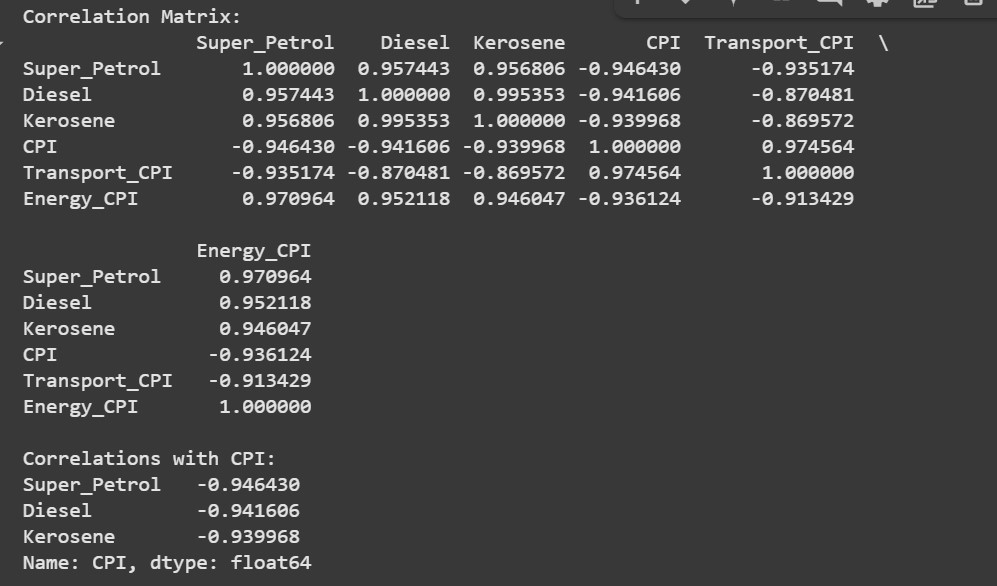
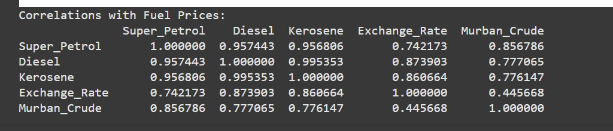
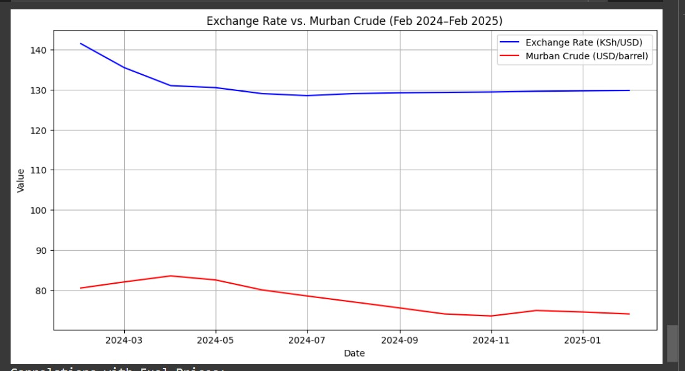
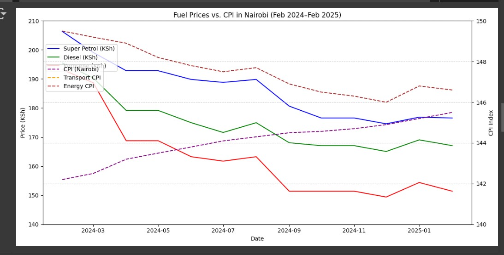
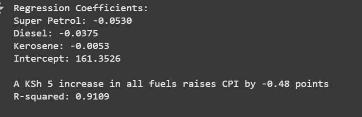

Fuel Price Analysis and CPI Correlation (Feb 2024 - Feb 2025)
Description: This project analyzes the correlation between fuel prices (Super Petrol, Diesel, Kerosene) and economic indicators such as Exchange Rate, Murban Crude, Transport CPI, and Energy CPI in Nairobi from February 2024 to February 2025. It includes statistical analysis and visualizations to uncover trends and impacts.
Objectives of the Analysis
- To investigate the correlation between fuel prices and economic indicators.
- To analyze how changes in fuel prices impact the Consumer Price Index (CPI).
- To identify trends and relationships using statistical methods and visualizations.
Insights
- Correlation with Fuel Prices: Super Petrol correlates strongly with Diesel (0.957443) and Kerosene (0.956806). Exchange Rate shows moderate correlation (e.g., 0.742173 with Super Petrol), while Murban Crude has a high correlation (e.g., 0.856786 with Super Petrol).
- Correlation with CPI: Fuel prices show varying correlations with Transport CPI (e.g., -0.870481 for Diesel) and Energy CPI (e.g., -0.913429), indicating an inverse relationship.
- Trends: Exchange Rate declined from Feb 2024 to mid-2024 and stabilized, while Murban Crude prices declined steadily. Fuel prices declined overall, with CPI showing a slight upward trend.
- Regression Analysis: A KSh 5 increase in fuel prices reduces CPI by -0.48 points (R-squared: 0.9109).
Solutions to Problems
- Inflation Impact: Monitor economic policies or subsidies to stabilize CPI despite fuel price changes.
- Currency Fluctuation: Implement hedging strategies or diversify fuel imports to mitigate Exchange Rate effects.
Visualizations





Libraries Used: Python, Pandas, Matplotlib, Seaborn, NumPy
Duration: Feb 2024 - Mar 2025
Link: GitHub Repository